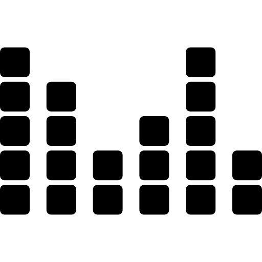

Meu nome é Paula Quadros de Mendonça, tenho 17 anos e estou no 3º ano do ensino médio, cursando informática na Fundação Matias Machline.
Qualificações acadêmicas
Ensino Médio: Fundação Matias Machline(2017 - ate o presente momento); Ensino Fundamental: EBAN - Escola Batista Arca de Noe (2007- junho de 2008); CEDAM (julho de 2008 – 2009); IDAAM - Cidade Nova (2010 – 2012); Lato Sensu - Cidade Nova (2013 – 2016);
Histórico de experiência acadêmica
Total de 11 Honras ao Mérito;
Coordenadora da banca em simulado de debate internacional;
Representante do estado do Rio de Janeiro - 2015 e Canadá - 2016 em simulado de debate internacional;
Apresentação musical na Assembleia Legislativa;
Primeira fase da OBI 2017, OBMEP 2018, OAMQ 2017 e 2018, ONHB 2018;
Conclusão de curso de inglês em 2016;
Certificado de FCE(CAMBRIDGE FIRST CERTIFICATE) – Fluência na língua inglesa;
Histórico de Experiência Profissional
Designer c/ mesa gráfica:
Utilização de mesa gráfica para produção de logos, desenhos em geral, montagens, edições.
Aprendiz em programação de websites;
Aprendiz em programação de jogos em Unity;
Aprendiz em programação de aplicativos em Android Studio;
Idiomas(spoken/written/reading)
Inglês: (Avancado / Fluente) - Wizard, Alps, Lato Sensu, Cultura Inglesa - Certificado de fluência em ingles - FCE (2016);
Qual foi o ato de coragem?
Meu maior ato de coragem foi ter superado um grande problema da minha vida totalmente sozinha, e isso me ajudou muito a crescer e ser forte.
Quando foi o ato de coragem?
No início de 2017.
Como foi o ato de coragem?
Uma coisa muito grave aconteceu comigo e eu sofri muito por isso. Infelizmente ninguém a minha volta tinha experência para me ajudar ou não sabiam o que fazer/falar, e eu tive que superar sozinha. Foi muito difícil nos primeiros meses, mas depois passei a enxergar como algo que me fortaleceria para sempre.
Quais habilidades utilizou para realizar o ato de coragem?
Força, coragem, superação.
Maior medo em vida

Por ter uma irmã com epilepsia de difícil controle, fui criada longe de luzes fortes e barulhos altos. Então, não fui acostumada a ouvir sons altos ou barulhos diferentes, por isso não consigo estar presente em um lugar com sons altos pois sinto muito medo.
Descreva o dia que teve mais Sorte na Vida
Quando eu estava na 5a série, todo mundo deveria levar o livro de português e de gramática, pois tinha a matéria todos os dias, mas só havíamos usado o livro de português até então. Mais ou menos em junho, um dia, eu havia esquecido o livro de português e levado apenas o de gramática, e estava com medo pois levávamos advertência caso não levássemos o livro. Justamente nesse dia, nós tivemos que usar o livro de gramatica e eu tinha sido a única a levar o livro, ou seja, a única que não levou advertência.
Gosta de animal de estimação? Descreve-os, referencie suas raças em sites da Web.
Sou apaixonada por gatos e possuo um, o nome dele é Vladimir Putin, e ele é branco de olhos azuis. Ele é calmo, tranquilo, mas não gosta de desconhecidos, pois ele começa a morder e arranhar. Ele não possui raça.
Qual seu time de coração? Quando começou a torcer para tal?
Meus times do coração são o Vasco da Gama e Avaí. Os dois foram influência do meu pai, pois ele é catarinense e torce para a maioria dos times catarinenses, principalmente o Avaí, mas também torce para o Vasco desde criança.
Você tem heróis? Quem seria? Por que gosta tanto dele?
Meus maiores heróis são meus pais, pela sua perseverança e luta. Os admiro mais que qualquer pessoa no mundo.
Você tem sonhos? Pode enumerar alguns?
Passar em medicina;
Me formar em medicina;
Me especializar em anestesiologia;
Fazer vários trabalhos voluntários;
Fazer parte de ONGs de tratamento médico para famílias carentes;
Fazer parte do “Médico Sem Fronteiras”;
Ser muito feliz;
Ter bastante dinheiro;
Ter paz de espírito;
Conquistar todos os meus objetivos;
Em relação a FMM, por que escolheu o curso de Informática?
Pois era o curso que eu mais tinha afinidade e gostava muito das matérias.
Informe algumas músicas favoritas suas.
"The Path Of The Wind" - My Neighbor Totoro;
"Kataware Doki" - Your Name;
"Obstacles" - Syd Matters;
"Scarborough Fair" - Aurora;
"Cantarella (Viola cover)" - Vocaloid;